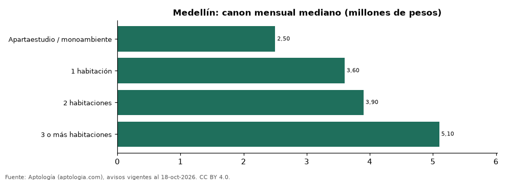

Arriendo en Medellín por número de habitaciones: cuánto cuesta cada tipo de apartamento (octubre 2026)
Estudio con datos abiertos (CC BY 4.0). Versión original: https://github.com/elbroker/aptologia-datos/tree/main/estudios/arriendo-por-numero-de-habitaciones-medellin-2026 · DOI: 10.5281/zenodo.23502504
En Medellín, arrendar un apartamento de 1 habitación cuesta en la mediana 3.600.000 pesos al mes y uno de 2 habitaciones, 3.900.000 pesos (+8,3 %). Uno de 3 o más habitaciones se pide en 5.100.000 pesos.
Resumen: analizamos 18.691 avisos de apartamentos en arriendo en Medellín con número de habitaciones declarado (sin amoblar).
Actualizado: 18 de octubre de 2026 (datos del 18 de octubre de 2026) · Próxima actualización: mensual.

Resumen
| Indicador | Valor |
|---|---|
| 1 habitación | 3.600.000 pesos |
| 2 habitaciones | 3.900.000 pesos |
| Salto de 1 a 2 | +8,3 % |
| Avisos | 18.691 |
Canon por número de habitaciones
| Tipo | Canon mensual (mediana) | Rango típico (P25–P75) | Área mediana (m²) | Canon por m² | Avisos |
|---|---|---|---|---|---|
| Apartaestudio / monoambiente | 2.500.000 pesos | 1.600.000 pesos – 3.700.000 pesos | 45 | 55.714 pesos | 1.655 |
| 1 habitación | 3.600.000 pesos | 2.712.500 pesos – 4.500.000 pesos | 57 | 62.500 pesos | 1.226 |
| 2 habitaciones | 3.900.000 pesos | 2.650.000 pesos – 5.500.000 pesos | 76 | 50.000 pesos | 5.402 |
| 3 o más habitaciones | 5.100.000 pesos | 3.700.000 pesos – 7.150.000 pesos | 120 | 44.000 pesos | 10.408 |
Medianas del canon mensual pedido, sin administración ni gastos comunes; el rango típico va del percentil 25 al 75.
Preguntas frecuentes
¿Cuánto cuesta arrendar un apartamento de 2 habitaciones en Medellín? 3.900.000 pesos al mes en la mediana (octubre de 2026); la mitad central de la oferta está entre 2.650.000 pesos y 5.500.000 pesos.
¿Y uno de 1 habitación? 3.600.000 pesos al mes en la mediana.
Metodología
- Fuente: exportes nocturnos de la base de datos de Aptología (aptologia.com) del 18 de octubre de 2026: avisos vigentes de vivienda en portales inmobiliarios de 13 países, recogidos por Aptología y vistos en línea entre el 11 y el 18 de octubre de 2026. Corte: 18 de octubre de 2026.
- Depuración: se eliminan duplicados exactos (misma ciudad, zona, tipo, precio, moneda, área, habitaciones y baños) y los precios fuera del percentil 1–99 de cada país, operación, moneda y tipo; el precio por m² usa solo avisos con área declarada entre 12 y 2.000 m² y también se recorta al P1–P99.
- Qué se mide: precios pedidos (publicados), no precios de cierre. En arriendo, el canon mensual sin administración, gastos comunes ni condominio.
- Muestra mínima: cada cifra publicada se apoya en al menos 30 avisos; las celdas con menos se omiten.
- Colombia: Precios en pesos colombianos, sin conversión de moneda.
- Sin amoblar: se excluyen los avisos marcados como amoblados, que en Colombia se concentran en estancias cortas y en apartamentos de 1 habitación y distorsionan la comparación.
- Limitaciones: la cobertura depende de los portales que recorre Aptología en cada país y es mayor en las ciudades grandes y en los segmentos medio-alto y alto; el área es la que declara el aviso, sin verificar; los nombres de zona vienen de los portales.
- Privacidad: solo se publican agregados; no se publica ningún dato personal, enlace a avisos ni nombre de anunciante.
- Datos abiertos: datos.csv, licencia CC BY 4.0.
Cómo citar
Pinzón Pineda, D. M. (2026). Arriendo en Medellín por número de habitaciones: cuánto cuesta cada tipo de apartamento (octubre 2026). Aptología (aptologia.com). https://github.com/elbroker/aptologia-datos/tree/main/estudios/arriendo-por-numero-de-habitaciones-medellin-2026. Datos: datos.csv, licencia CC BY 4.0.